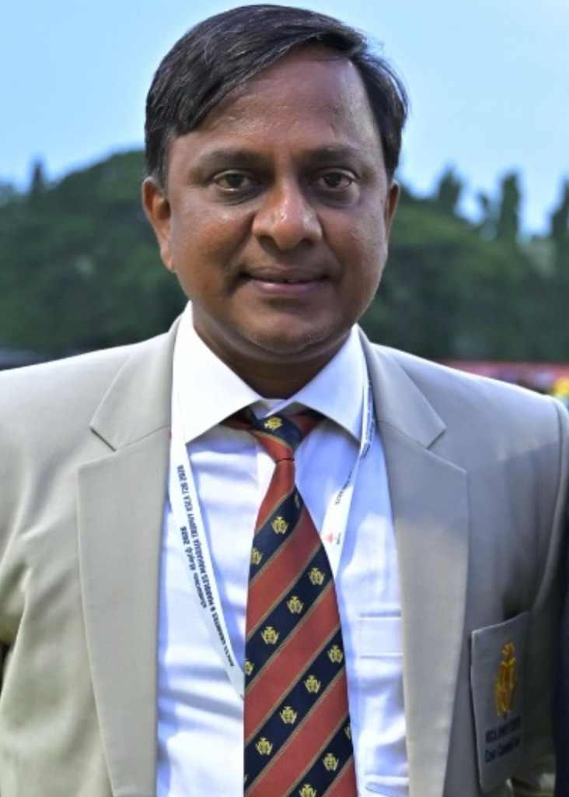

About United Pharma
From a focused anaesthesia partnership to a multi-specialty healthcare-solutions distributor — built on deep clinical knowledge and long-term hospital relationships.

Founded by
With over 15 years of deep expertise in anaesthesia, pain management and critical care, S. Aravind founded United Pharma with a singular conviction: every hospital in Karnataka should have access to the complete spectrum of anaesthesia and surgical solutions — drugs, devices and disposables — from a single, trusted partner.
Before founding United Pharma, Aravind built his career in sales and marketing at MSD (Merck Sharp & Dohme), one of the world's leading multinational pharmaceutical companies. There, he specialised in the anaesthesia and critical care therapeutic group, developing an intimate understanding of how operating theatres function, what clinicians actually need at the point of care, and the supply-chain gaps that compromise surgical outcomes in Indian hospitals.
That MNC-grade rigour — combined with a genuine commitment to improving clinical practices in and around the operation theatre — became the foundation of everything United Pharma stands for today.
What drew Aravind to healthcare distribution was a gap he saw firsthand during his MSD years: hospitals were sourcing anaesthesia drugs from one vendor, devices from another, and disposables from a third — with no single partner who understood the full clinical picture. United Pharma was built to solve that problem — bringing the entire anaesthesia product set, from drugs to devices, under one roof.
United Pharma's mission has never been purely transactional. Aravind founded the company with a clear values mandate: to assist hospitals in adopting the best clinical practices in and around the operation theatre. This means going beyond supply — offering technical guidance, product training, and helping clinical teams select the right solutions for their specific surgical needs.
United Pharma began where Aravind's expertise ran deepest — in anaesthesia and pain management. The company built its earliest hospital relationships in Bangalore by working directly with anaesthesia departments, understanding their clinical workflows, and introducing products that addressed real gaps in their day-to-day operations. Partnerships with global leaders like Baxter (Suprane desflurane) and the Varenyam/Nidrava anaesthetic drug range established United Pharma as the go-to anaesthesia specialist in Karnataka's hospital network.
The clinical trust earned in anaesthesia created a foundation for deliberate expansion. Hospital teams that had come to rely on United Pharma for their anaesthesia needs asked for the same level of support across other departments. Step by step, the company added critical care and respiratory solutions (Baxter Starling, Hillrom Vest), advanced surgery and HIPEC (Curotherm NOVOPEC), orthopaedics and sports medicine (DePuy Synthes/J&J), urology (Meril), patient positioning (Lenvitz), and infection prevention (Meril 360) — each new vertical entered with validated manufacturer partnerships and the same clinical-depth approach.
Today, United Pharma serves 120+ government and corporate hospitals across Karnataka — institutions like Jayadeva, NIMHANS, Kidwai, Victoria Hospital, and leading corporate groups including Manipal, Fortis, Apollo, and Aster. The 120+ number represents relationships, not transactions — long-term partnerships with anaesthetists, surgeons, biomedical engineers, procurement teams and hospital administrators who trust United Pharma to deliver consistently, provide technical support, and bring the best products from the world's leading manufacturers to the hospitals where they are needed most.
Our goal was never just to supply products. It was to bring the best global practices into every operation theatre in Karnataka — to ensure that the surgeon, the anaesthetist, and the patient all have access to the same quality of care, whether in a government hospital or a corporate institution.